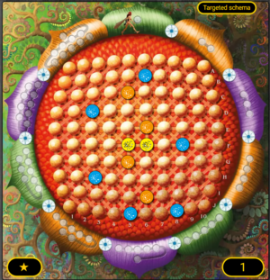
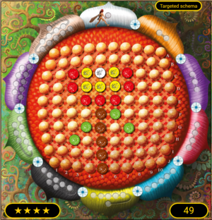
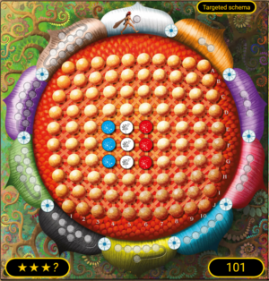

Stigmeria
Board Game Arena 官方规则文档
Components
- 1 Flower Board per player containing a grid of 10x10 cells called "pistils". The name printed on the flower is a reminder of the rules to apply on it. (See start options, everyone will start with the same empty flower)
- 1 Central common flower board when playing in competitive modes
- 1 Target schema board is a picture of your goal for a given game : it states all the pollen you need to have on your board to be able to win before the others
- (unlimited) Tokens representing 1 Stigmerian on a side (with some fairy figure) and 1 pollen on the other side :
- 9 colors exist : Red, Yellow, Blue, Orange, Violet, Green, Pink, White, Black
- 1 token = 2 sides of the same color: eg. 1 blue stigmerian token becomes 1 blue pollen when you flip it
- Wind arrow tokens will be placed around the board to indicate known wind direction : South by default, but in No Limit can be anything (North, South, East, West)
- 1 Special actions board per player : list the 20 special actions and display who unlocked what. White token means unlocked, black token means unlocked and already used.
- 1 die with 12 colored faces :
- used in competitive mode with 1 special action or 1 versus action
- used to randomize wind in No Limit Mode
- Help and action cards describe which action is available to you in a given game : on BGA, you may display tooltips over each special action to see its description.
Objective
Find the best combinations of available actions to recreate on your personal board the schema of the chosen schema flower in a minimum of turns and actions.
5 game modes
Discovery : like normal but you don't loose too early, you can discover the rules (for example in solo).
Normal : a race between 1 to 6 players to fulfill the target before the end of turn 10.
Competitive : almost like normal + you don't start with default special actions, everyone need to earn it through central board.
Competitive No Limit : almost like Competitive + turns are not limited to 10 + wind is not known in advance + you can directly attack a flower board with Last Drift action.
Solo No Limit : almost like Competitive No Limit but as you are alone you won't play on a central board to earn special actions; the game will offer you 1 special action for each turn
Setup
- The game display the selected target schema to everyone
- Each player receives an opaque bag with 45 stigmerian tokens (15 YELLOW + 15 RED + 15 BLUE). On BGA, you cannot watch in your bag but you know the current size of it (like if you had it in your hand).
- Each player receives the same empty flower.
- Each player draws a token from their bag and place it on the recruitment zone of their personal flower board.
- If the targeted schema contains a side "Set up", place all the needed tokens on each player's flower in order to start with that same set up.
Gameplay Overview
Game will play in turns where each turn will give you more actions (1 action in turn 1, 2 in turn 2, ... 10 in turn 10, capped at 10 for 10+). There is some empty spots around each of the 10 petals of the flower board where the turn counter will move to display how many moved anyone used in the turn.
During each turn, a first player is chosen and everyone will play in clockwise order after them : playing the N maximum actions. Each action may move/replace/remove a stigmerian token from your board and if it is on a targeted spot, it becomes a pollen : pollens cannot be modified (except removed by very few actions) and represent your progression to the victory.
After each turn (except last one), there is an automated effect on each flower board : wind blows over stigmerian to move them 1 spot away in a given direction.
On Your Turn
Central board "StigmaReine"
If in competitive modes, you have 2 actions on the central board to take : (you are forced to choose at least "1 Draw and land")
- Draw and land : Draw and land a stigmerian from your bag to the central board and place it near others if any.
- Move : Move a stigmerian of one adjacent spot (no diagonal)
If one of these actions make the central board contains 3 tokens of the same colors, you earn a special action ! (and remove those tokens to avoid the next player to earn again ;)). You may not earn more than 9 special actions this way.
Basic actions on your board
- Draw (alias Recruit) : take 1 stigmerian from your bag and place it in your recruit zone
- Land : take 1 stigmerian from your recruit zone and place it on your board (adjacent to others if any)
- Move : Move a stigmerian of one adjacent spot (no diagonal)
- Recruit on StigmaReine : take 1 stigmerian from central board recruit zone and place it on your board (adjacent to others if any)
- Joker : 1 per game action, optional rule : play special action "No harm no Foul" for free.
Special actions on your board
| Unlocked in normal mode | Unlockable in Competitive | Max uses in turn N | Cost (number of actions) | Info | |
|---|---|---|---|---|---|
| Mixing | on VertigHaineuse flower + InspirActrice | 1 (or 2 with InspirActrice in normal mode) | Change the color of two primary stigmerian tokens which are horizontally or vertically adjacent into the secondary color resulting of their mixing. Be careful this action cannot be performed on pollen tokens.
Put back in the box both primary color tokens and replace them at the same place on the flower by secondary color tokens from the box. | ||
| Combination | on Maronne flower + InspirActrice | 1 (or 2 with InspirActrice in normal mode) | Change to a brown color a stigmerian token that is surrounded by 8 tokens (diagonals included) of which at least 2 yellow, 2 red and 2 blue tokens. The surrounding tokens can be stigmerians or pollens. The original central token is replaced by a brown stigmerian token and put back in the box. | ||
| Fulgurance | on Maronne flower + InspirActrice | level >= ** | 1 (or 2 with InspirActrice in normal mode) | Draw 5 stigmerian tokens from your bag and put them randomly from left to right on the same line, with the first token adjacent to a stigmerian or pollen token already in game : no diagonals but the first token can be above or under a token as long as it is adjacent.
If there is no token already in game, put the first token on a free space on the first line (A) as long as you can place the other 4 tokens next to this one on the same line. | |
| Choreography | on DentDine flower + InspirActrice | level >= *** | 1 | 1 (or 2 with InspirActrice in normal mode) | Once per turn you can move maximum N stigmerian tokens by one movement. (N is equal to the ongoing turn number minus 2). |
| Diagonal | on DentDine flower + InspirActrice | 1 (or 2 with InspirActrice in normal mode) | Move a stigmerian token diagonally. | ||
| Exchange | on DentDine flower + InspirActrice | level >= ** | 1 (or 2 with InspirActrice in normal mode) | You can switch the position of 2 adjacent stigmerian tokens (diagonals excluded). They permute. | |
| Fast Step | on DentDine flower + InspirActrice | level >= *** | 1 | 1 (or 2 with InspirActrice in normal mode) | Once per turn, you can move one stigmerian token by X movements maximum. (X is equal to the ongoing turn number minus 2). |
| Half Note | on SiffloChamp flower + InspirActrice | level >= ** | 1 (or 2 with InspirActrice in normal mode) | Fusion 2 black adjacent tokens in one white stigmerian token on one of the two places previously occupied by the black tokens. Put back in the box the 2 black tokens. | |
| Quarter Note | on SiffloChamp flower + InspirActrice | 1 (or 2 with InspirActrice in normal mode) | Transform a white stigmerian token in 2 black stigmerian tokens. Put the white token back to the box and replace it by one black token. The second black token is placed adjacent to the first one. | ||
| Two Beats | on SiffloChamp flower + InspirActrice | 1 (or 2 with InspirActrice in normal mode) | Make a white stigmerian token appear in an empty spot which is surrounded by 8 tokens (diagonals included), it can be a mix of stigmerian and/or pollen tokens | ||
| Rest | on SiffloChamp flower + InspirActrice | level >= *** | 1 | 1 (or 2 with InspirActrice in normal mode) | Once per turn you can make a stigmerian or a pollen disappear from a flower spot. The token is put back in the box. |
| No harm No foul | NO | 1 | Exchange 4 tokens of the same primary color in your recruitment area by 4 tokens of the same primary color of your choice taken from the box (example: 4 blue tokens exchanged for 4 yellow tokens or 4 red tokens). | ||
| Copy | NO | level >= ** | 1 | 1 | Once per turn, switch a stigmerian token of a primary color on the board with another stigmerian token of a primary color from the box. The switched token is put back in the box. |
| Prediction | NO | level >= *** | 1 | 1 | Once per turn, take 3 tokens of different colors from the box and add them to your bag. That allows you to be able to draw tokens of non primary colors to top put on the common board : in this case, these colors work exactly with the same rules than primary colors to unlock the special actions on the common board. |
| Mimicry | NO | level >= *** | 3 | Spend 3 action points to exchange the last stigmerian token that landed on the board by the same color of one of the adjacent colors. You cannot copy the same color many times on the same turn. | |
| Fog Die | NO | level >= *** | 1 | 1 | Once per turn, roll the die and take a stigmerian of the color indicated by the die face. Without using the recruit action, you have to land this token on your board, following the landing rules. |
| Pilferer | NO | 1 | 0 | Free action, once during your turn, you can choose a token of a color that is not used by the schema and put it in another player bag. | |
| Sower | NO | 1 | 0 | Free action, once during your turn, you can recruit by drawing a stigmerian from another player bag and putting it in your recruitment area. | |
| Jealousy | NO | level >= ** | 1 per game | 1 | Once per game, during your turn, after playing on the common board (and before playing on your individual board), you can exchange your bag for the rest of the game with an other player.
You must have a minimum of 5 tokens in your bag to exchange it. |
| Charmer | NO | level >= ** | 1 | 0 | Free action, once per turn, at the end of a turn after all players played on their individual board (in turn order).
Exchange one stigmerian from a recruitment area with one stigmerian from an other recruitment area. If more than two players play, you can exchange tokens from 2 other players. The exchanged tokens cannot be exchanged again in the current turn. The first player do this action first if they can and wish to do so, then other players do the same in turn order. |
Last Drift
(called "Final drift" in the english rulebook page 30)
Free action. Once per turn before playing on the common board, choose one of this 3 options PERSONAL BOARD, OPPONENT BOARD or CENTRAL BOARD before throwing the dice then do the dice actions.
Once the dice has been throw, you have to do the action.
End of game
Defeat case 1 : Time
When no one succeeds at fulfilling the objective in time (Normal mode / Competitive modes are limited to 10 turns, solo / multi), then everyone lost the game.
Defeat case 2 : Out of tokens
In a competitive game, a player who run out of tokens in their bag will not be able to play the mandatory central action "draw and land", so they are considered eliminated and other players continue the game.
Defeat case 3 : Wind
In a normal mode game, if wind blows 1 of your token out of your board, you loose ! (and other players continue the game)
Victory case :
The player who finish the schema identically (ie. same pollens and 0 remaining stigmerians) in the least game turns and actions win.
The game end at the end of the current game turn. (NB : in normal mode, the game will give everyone a chance to fulfill the schema until turn 10, in competitive modes the game stop.)
Scoring
A success for a schema gives 5 points for level *, 10 for level **, 20 for level *** and 40 for level ****: each unused action (before end of last turn) gives 1 point.
A defeat gives -1 point.
A used joker gives -5 points.
In case of a tie between winners, the player with the most stigmerians in their recruit zone wins.
If there still is a tie, the player with the most yellow stigmerian recruits wins.
Options
Your first option is to select the game mode (NORMAL by default). (See objective section).
Your second option is to select the targeted schema for the game : you may select a random one but be careful of differences in difficulty. Default is 1 (Easy). There are 49 official schemas (from publisher) and some can be made by fan players).
Examples of schemas
1 : the star on lower left corner reminds you of the difficulty (the easiest)
In the first schema, you will need 6 blue pollens, 4 orange pollens and 2 yellow pollens :

49, the most difficult official one : (****)

Unofficial 101 :

Obsolete rules
- We don't reset the board after a token exits. Change the rule from english rulebook page 23 :
If a stigmerian exit the common board either by the wind effect or a movement of a basic action, the
players reset this board.They take off all the stigmerians from their position on the StigmaReine
and put them all around it, outisde of the petals.